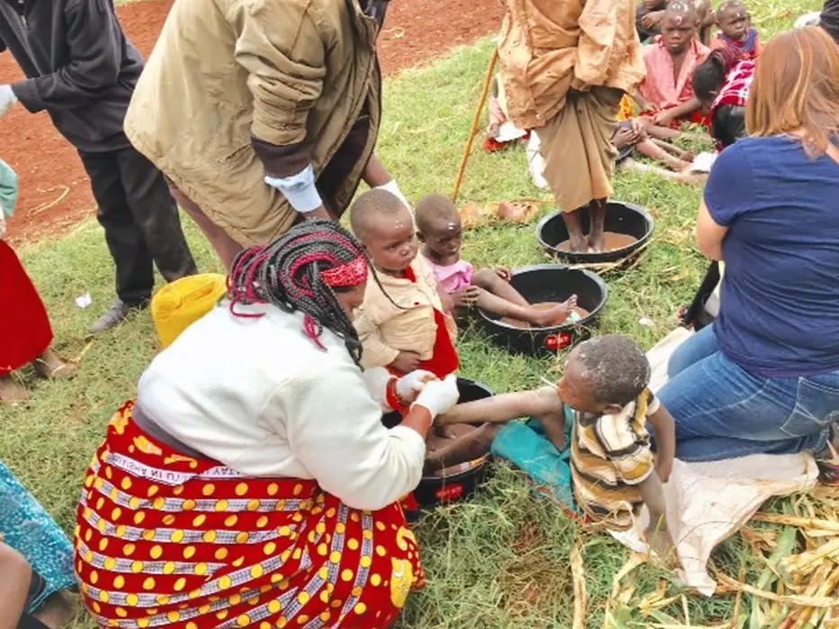
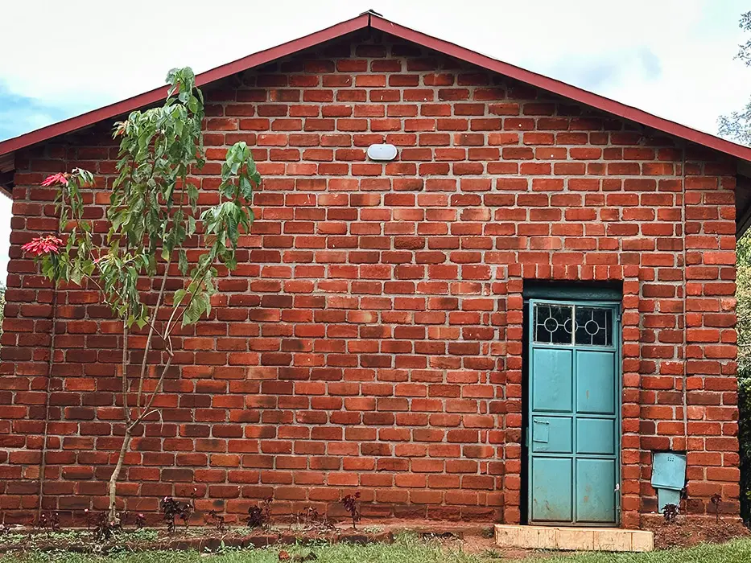
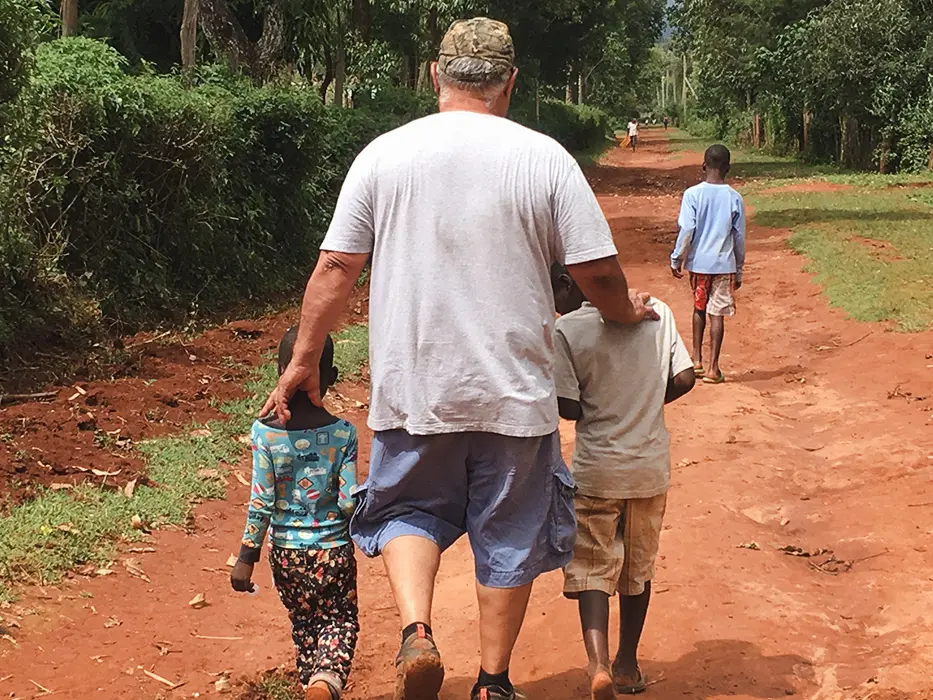

15 boys, 2 house parents
The boys
15 orphan boys live in our home with house parents Edward and Isabel: food, clothes, school and a family.
We run a home for 15 orphan boys just outside Kitale and reach widows in six villages around it with food, homes and medical care. We run only on donations, and every gift is tax deductible.

Straight from the field. Each line is a day our team in Kenya spent your donations.
It started in 2008 with one girl who needed surgery. Today we care for boys, widows and whole villages across Trans Nzoia County, and employ 44 people in Kenya.
15 orphan boys live in our home with house parents Edward and Isabel: food, clothes, school and a family.

Food every six weeks for widows from over eight tribes, and new two‑room homes built each year.

Three preschools in Pokot villages, a 6‑acre farm, sewing machines for seamstress graduates and trade training.

Treatment for jiggers, malaria, typhoid and stomach illness, where there is no clinic nearby.

Homes for widows, a safety wall around the property, and help for mothers like Monica and her nine children.

Over six churches built, conferences, Bibles and visits to the local prisons with food and supplies.
“These are just kids, regular kids, living in conditions that America has long forgotten.”Lani Orosco, co‑founder
In 2008 Coney Orosco met Helen, a girl at Barkowino Primary School born with bladder exstrophy. Getting her the care she needed is how Missions for Orphans began.
Read our story
Pastor Ryan Orosco shares his team's mission, goals and experiences, and the faith at the heart of Missions for Orphans.

 Coney OroscoCo‑founder
Coney OroscoCo‑founder Lani OroscoCo‑founder
Lani OroscoCo‑founder Ryan OroscoDirector
Ryan OroscoDirector Bianca OroscoFamily
Bianca OroscoFamily Tisa WallingFamily
Tisa WallingFamily Jeff WallingFamily
Jeff WallingFamily Edward & IsabelHouse parentsOrphan careFood, school and a home for the boys of Kipsaina.GiveTax deductible
Edward & IsabelHouse parentsOrphan careFood, school and a home for the boys of Kipsaina.GiveTax deductible WidowsFood every six weeks and new two‑room homes.GiveTax deductible
WidowsFood every six weeks and new two‑room homes.GiveTax deductible Community outreachMedical missions, school fees and village programs.GiveTax deductible
Community outreachMedical missions, school fees and village programs.GiveTax deductible Onsite projectsThe farm, the safety wall and building on our property.GiveTax deductible
Onsite projectsThe farm, the safety wall and building on our property.GiveTax deductible Where it's needed mostWe put your gift where the need is greatest today.GiveTax deductible
Where it's needed mostWe put your gift where the need is greatest today.GiveTax deductibleNo admin costs: our directors live in Kenya, and every gift goes to the programs. Missions for Orphans is a 501(c)(3), so donations are tax deductible.